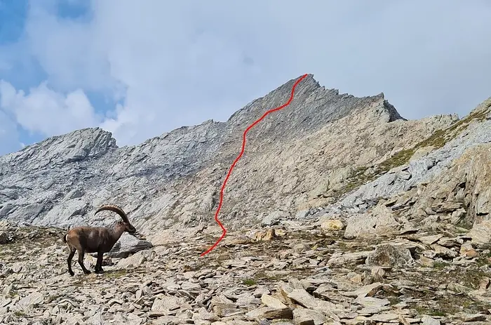
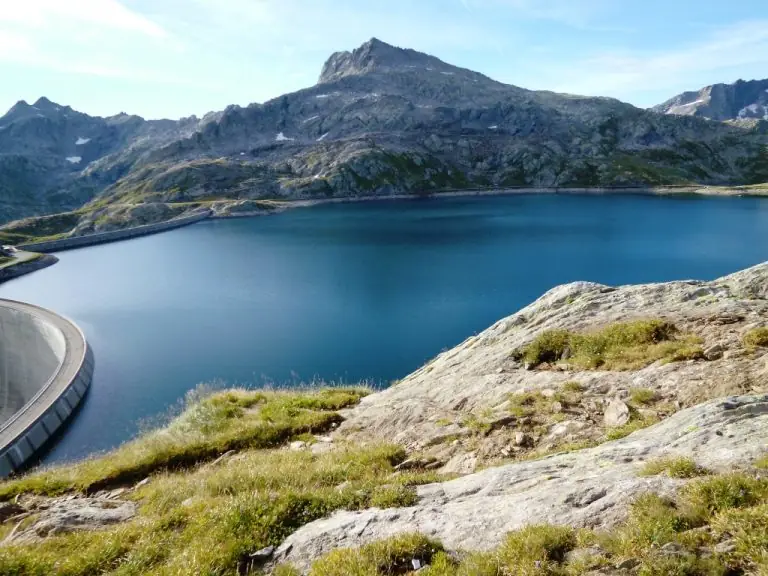
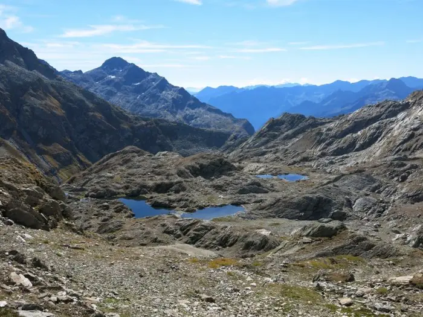
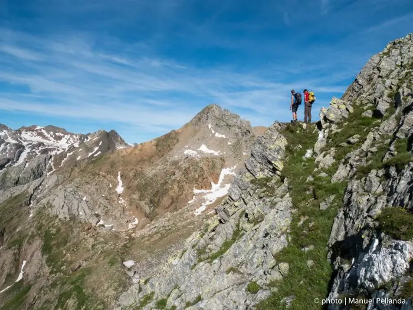

Cima di Lago (2832 m)
Un sommet à la vue superbe, idéal aussi pour des enfants au pied sûr : vous rencontrerez probablement des bouquetins.
- Longueur
- 4 km
- Montée
- +300 m
- Temps
- 1 h
- Difficulté
- T4
Cinq itinéraires de difficulté moyenne, de la Cima di Lago à la Via Idra, avec la cabane comme base ou comme étape.

Si vous voulez découvrir la merveilleuse région du Cristallina, avec ses lacs de montagne et sa faune de haute montagne, voici des itinéraires de difficulté moyenne, pas trop longs, qui partent de la cabane ou l’utilisent comme étape.

Un sommet à la vue superbe, idéal aussi pour des enfants au pied sûr : vous rencontrerez probablement des bouquetins.
Le sommet principal, entouré d’un chapelet de lacs de montagne ; au sommet se dresse encore le Rifugio Camosci, dernier témoin des temps de guerre dans la région. Sur la dernière pente, attention aux chutes de pierres s’il y a d’autres personnes ; n’entrer dans le bivouac qu’avec beaucoup de prudence, il y a un risque de chute.

Un tour classique et facile, sur un sentier blanc-rouge-blanc, autour du sommet du Cristallina. Possible aussi en excursion d’un jour depuis Robiei ou depuis le col du Narèt, avec repas à la cabane.

Le Sentiero Cristallina numéro 59 est une traversée classique de trois jours de Bignasco, dans le Val Maggia, à Airolo.

La première étape de la Via Idra, du col du Nufenen à Airolo avec une nuit à la cabane. Le point fort est la montée par le Canale del Becco, équipé de cordes et de marches : mieux vaut le faire à la montée ; attention aux chutes de pierres et à la neige en début de saison.